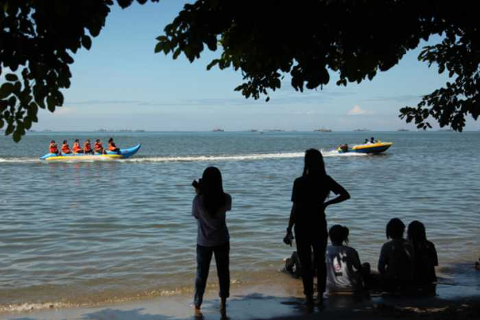

List Object Wisata Palopo

Mulai dari berbagai aktivitas air seperti flying fox, outbond, banana boat, sepeda air, dan berbagai hal lainnya bisa dilakukan di Pantai Labombo. Atau, kamu juga bisa bersantai dipinggiran pantai sembari menikmati panorama laut di gazebo-gazebo yang dibangun di pinggiran pantai di bawah rindangnya pepohonan.
Disamping pengelolaannya yang baik, pantai satu ini memang memiliki pemandangan yang memukau. Anda bisa menikmati pasir putih luas dengan wilayah yang begitu bersih. Kini kehadirannya sangat digemari oleh masyarakat dari Kota Palopo sendiri. Bahkan menjadi langganan untuk menghabiskan liburan bersama keluarga. Karena memang selain pemandangan yang indah, pengunjung juga bisa menjajal beragam wahana yang disediakan.
 Anda yang menyukai kegiatan menantang adrenalin, Anda bisa mencoba Flying Fox. Wahana ini tentunya akan membuat Anda bisa menikmati pemandangan dari ketinggian. Tidak hanya Flying Fox, Anda juga bisa mencoba perahu bebek yang akan membuat kegiatan liburan semakin seru. Menaiki perahu bebek dengan keluarga pastinya akan jadi pengalaman yang tidak terlupakan. Selain perahu bebek terdapat juga wahana permainan anak.
Pesonanya yang tidak kalah cantik dengan pantai lainnya adalah pemandangan matahari terbenam. Semburat warna jika yang berpadu dengan suara deburan ombak pastinya menjadi pemandangan yang sangat beharga. Bahkan banyak wisatawan yang sengaja menunggu momen ini untuk melihat panorama yang memukau. Panorama malam hari ini di pantai Labombo juga sangat cantik dan membuat Anda enggan pulang.